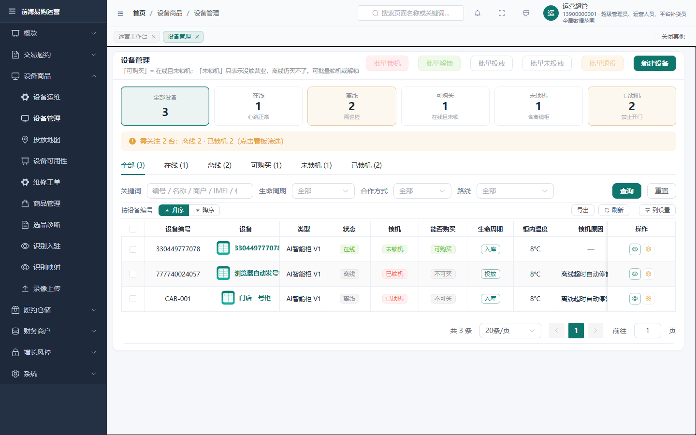
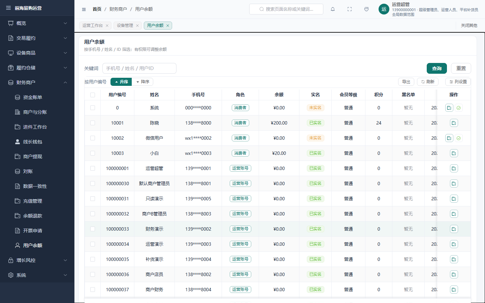
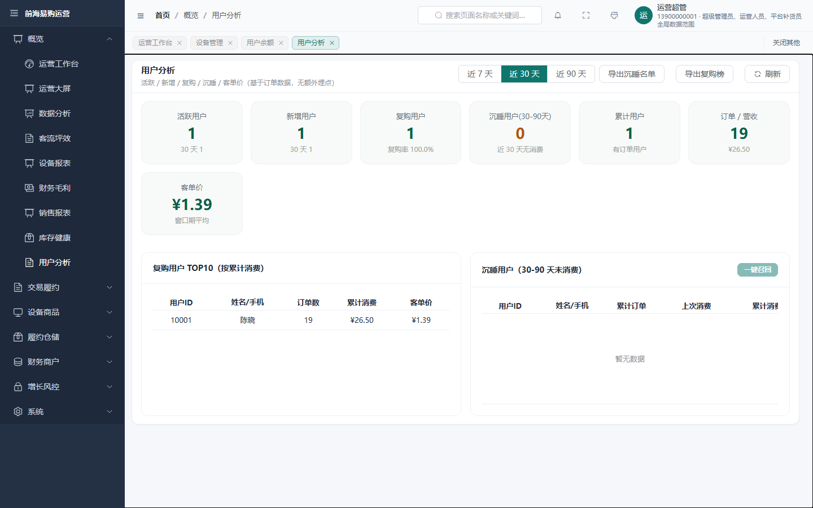
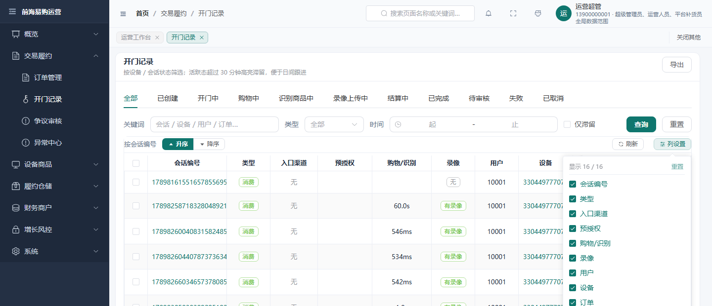
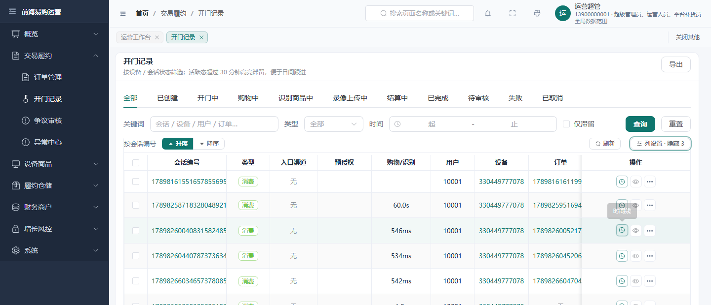
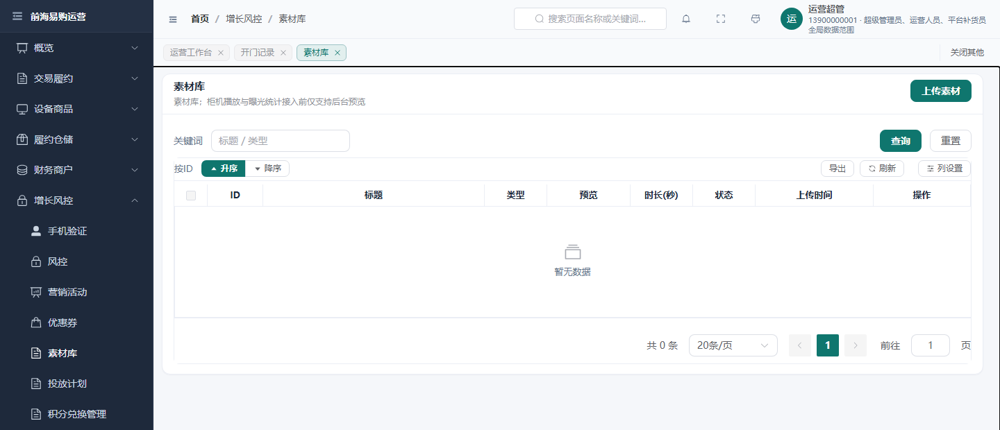

四条建议已逐条处置 —— 其中两条我最初的判据是错的（③ 与 ①），已当场更正并写清错在哪。
「测试用文案」在渲染层面清零；dev 夹具改名走 forward-only 迁移 V286，
因此一个全新的库（含生产）跑完迁移链也不会再出现「测试柜-001 / 测试用户」。
document.body.innerText）——源码里有字面量 ≠ 会渲染（会被 v-if / 常量折叠摘掉）。curl 必须带 --noproxy "*"（宿主注入的 http_proxy 会把「没监听」误读成「服务 502」）。| 建议 | 我最初的判断 | 实测与处置 |
|---|---|---|
| ① 宽表吸附列压住邻列 | 「阴影太淡，加个左阴影」 |
原判不准：阴影本来就存在 —— main.css:2360 起是
刻意调暗过的（用户曾抱怨那里有一条「线」）。真正的缺陷是
main.css:2403-2406 那两条抑制规则永不触发：
「压根不可横滚 / 已滚到最右」判的是 EP 的 is-scrolling-* 状态类，而本仓把横滚收在
.crud-table__table，EP 收不到滚动事件 ⇒ 该类恒为 is-scrolling-left，
吸附列左缘在任何位置都挂着过渡带。处置：改为由真实滚动容器驱动 is-fixshadow（可横滚 且 未到最右 ⇒ 显示）。
实测：滚到最右时 class 由 true → false、阴影消失。
|
| ② 空态浪费竖向空间 | 「占位太高」 |
属实：el-empty 实测占 278–318px，且整块没有出口动作。处置：紧凑空态 .crud-empty（小图标＋一行说明＋可选 #empty-extra 动作），
并放行 EP 自带的 .el-table__empty-text{width:50%;line-height:60px}（它会把这套紧凑空态重新撑高）。
实测：空态块 160px、表体 192px。
|
| ③ 溢出单元格悬停看全文 | 「没有悬浮提示，要加」 |
原判是错的：installTableCellNativeTitle()
（main.ts:28 全局安装）早已用原生 title 兜底，并显式跳过
.col-action / .el-table-fixed-column--right。我 round-1 的判据只看了 text-overflow: ellipsis，没查 title 属性 ——
于是把「已经解决」误报成「缺失」。本项无需改代码，只补了正/负对照判据（见 §4）。⚠️ 顺带发现：门禁 check:admin-anti-jitter 规则 H 全后台禁止该 prop，
且它的 stripComments 只剥 JS 注释、不剥 HTML 注释 ⇒ 连注释里写出那个 prop 名都会判红。
|
| ④ 窄屏提示条占高 | 「排查其它固定高度页」 | round-1 已修设备地图页；本轮 71 路由复扫无回归。 |
| ⑤ 新增（对标主流 SaaS 后台） | — |
列设置：列显示/隐藏，按路由持久化（不同页列集合不同，混存会互相污染）；
≥2 列时出现；「至少保留一列」防呆。 ⚠️ 实现要点：业务列由各页通过默认插槽传入 ⇒ 在渲染前对插槽 vnode 做一次过滤， 一处改动覆盖全站 71 个表页。两处陷阱： (a) 必须给每个列 vnode 显式 key（Vue 对无 key 子节点按下标 diff，
隐藏中间列会让后面的列被就地复用 ⇒ columnId 错乱）；
(b) 过滤结果必须是扁平 vnode 数组（el-table-column 用
getColumnElIndex()＝indexOf 只看直接子节点，
多包一层 DOM 会让所有列注册失败、整表变空）⇒ 用函数式组件返回数组（Fragment，不产生 DOM）。⚠️ 未采纳「行密度切换」： main.css:611-618 已按实测定过行高
（TableActions 24px 按钮＝行高旋钮，再压「观感偏挤」）⇒ 加个开关只会是无效花架子。
|
| 位置 | 原文案 | 处置 |
|---|---|---|
LoginView.vue |
「内部测试账号」 | 由 ENABLE_TEST_TOOLS 门控（v-if）⇒ 命中登录页渲染文本 0（复扫确认）。无需改。 |
LineManagerView.vue / MerchantWithdrawView.vue |
「测试环境可能为记账打款」「Mock 打款」 | 改为业务化措辞（说明手续费与到账口径），去掉「测试 / Mock」字样。 |
SystemConfigService.java |
告警值班人描述里的「张三」 | 改为占位符（值班人姓名 / 手机号）；并用既有 refreshDescriptionIfPresent 修正已入库的历史行（否则旧库仍显示张三）。 |
AdminDashboardController.java |
大屏「演示 / Mock 数据 · 请勿作为生产口径」 | 改为「演示数据 · 非生产口径」，语义保留 —— 有意保留： 它是运行期真值标签，删掉会让演示数据失去标注（已在 Javadoc 写明「勿删」）。 |
DeviceDetailView.vue |
字段提示里的「测试门店…」 | 改写成真实的地址录入约束说明（未限定行政区划会被地图服务匹配到别的城市）。 |
| 公告 / 优惠券 / 营销 / SKU 等页面 | 「示例公告」「示例可乐」等 | 逐条改写为业务化文案。 |
[summary] 1440x900 命中 0 处，涉及页面 0 个 + 登录页 （覆盖 66 条路由 + 登录页；日志 .tmp/probe/audit/copy-scan-rename.log）
⚠️ 诚实口径：扫描器 copy-scan.mjs:71 的 SKIP 集合含
/big-screen ⇒ 该页未被扫描（不是「已验证为干净」）。
该页显示的「演示数据 · 非生产口径」是有意的运行期标签，非遗留文案。
病根（不是「某处文案漏改」，而是种子写在无条件迁移里）：
| 来源 | 写入内容 |
|---|---|
V2__user_order_sku.sql:56 | CAB-001 → 「测试柜-001」 |
V2__user_order_sku.sql:59-60 | user_info#10001 → 「测试用户」 |
V44__merchant_scope_hardening_m5.sql:8 | CAB-OTHER → 「测试柜-OTHER」 |
V57__repair_demo_device_name.sql:3 | 把 CAB-001 的名字改回「测试柜-001」 |
这四支没有 seed_env 守卫 ⇒ 一个全新的库（含生产）跑完迁移链后，
运营台上就会出现「测试柜-001 / 测试用户」，上线时还得再改一次 —— 这正是本轮要消除的。
V2 / V44 / V57 一律不动
（改写已应用迁移 = checksum 漂移）。改名前移到新迁移
V286__rename_demo_fixtures.sql（MIGRATION_KIND: backfill）。
???）才改写
⇒ 运营已经手工改过的名字不会被覆盖，重放与多环境均安全。
seed_env 守卫（与 V244/V252/V283 不同）：
那几支守的是「只在 UAT/local 生效的演示种子」，生产跳过它们是对的；而这里要修的病根恰恰是
「旧名已经写进了每一个环境」—— 加守卫会让生产继续显示「测试柜-001」，与目的完全相反。
DeviceNameSupport.KNOWN_NAMES 为唯一运行时权威
（新增 DEMO_DEVICE_NAME / DEMO_DEVICE_NAME_OTHER），
DemoDataService 改为引用常量（新增 DEMO_CONSUMER_NAME），消灭重复字面量。
DeviceNameSupportTest 断言改为引用常量，
FundBillServiceTest / SiteContractServiceTest 的本地夹具）——
修一类缺陷要扫兄弟副本。
| 对象 | 旧 | 新 |
|---|---|---|
device_info CAB-001 | 测试柜-001 | 门店一号柜 |
device_info CAB-OTHER | 测试柜-OTHER | 门店二号柜 |
user_info 10001 | 测试用户 | 陈晓 |
| 项 | 命令 / 取证点 | 结果 |
|---|---|---|
| 受影响单测 | mvn -pl services/trade-service clean test -Dtest=DeviceNameSupportTest,FundBillServiceTest,SiteContractServiceTest |
EXITCODE=0；按真实 <testcase> 计数：
FundBill 4 + SiteContract 2 + DeviceNameSupport 4 = 10 例，fail=0；日志尾部 BUILD SUCCESS
（不用 Tests run: 行——在 @Nested/IT 类上会写 0）
|
| 迁移已应用 | select version,success,installed_on from flyway_schema_history where version='286' |
286 · success=t · installed_on 2026-09-23 15:41:08 —— 从运行中的容器取，不是源码 |
| 数据行已改名 | select device_id,device_name from device_info / select name from user_info |
CAB-001 → 门店一号柜；10001 → 陈晓；
两表 like '%测试%' 行数 = 0 / 0
|
| 渲染层 A/B | node .tmp/probe/verify-rename.mjs（A＝期望新名 / B＝期望「门店九号柜」） |
A：3/3 PASS（devices rows=3 / users rows=15 / user-analysis rows=1，
均 missing=[]、legacyLeft=[]）B：0/3 FAIL（ missing=[门店九号柜]）⇒ 证明判据非恒真
|
| 文案复扫 | copy-scan.mjs --viewport=1440x900 |
命中 0 处 / 0 个页面（66 路由 + 登录页；/big-screen 被 SKIP，见 §3.2） |
| 门禁链 | node scripts/run-audit-gates.mjs（带 nopipe 垫片） |
34 个门禁，失败 0（含 check:line-endings、check:admin-anti-jitter、check:admin-table-align） |
| 迁移门禁 （CI-only） |
check-flyway-seed-separation.mjs / check-migration-safety.mjs |
前者：新增 V 迁移 1 个 → OK（真扫到了 V286，非空转）后者： reviewed=false ...V286__rename_demo_fixtures.sql → OK
⚠️ 这两支不在本机 34 链内（O9 的门禁布在 CI），故必须手工跑 |
| round-2 界面复跑 | node .tmp/probe/final-verify.mjs |
原生 title 正对照：溢出单元格 title == 全文 ⇒ true；
隐藏 3 列后 scrollW=1710 vs clientW=1147；
空态 tableH=192 / emptyBlockH=160
|

门店一号柜
陈晓
陈晓


V2/V44/V57
没有 seed_env 守卫，会把 dev 夹具
（CAB-001 / CAB-OTHER / user_info#10001 /
WH-DEMO-001 / SKU-DEMO-001）播种到生产。
本轮只改了名字，没有删。是否加一支「生产不播种 dev 夹具」的迁移属
破坏性数据动作，需拍板后再做。
10001 的手机号 13800138000 是经典测试号段；未改 ——
改它牵动 UAT/脚本多处，收益不抵风险。
/big-screen 未纳入文案复扫（扫描器 SKIP）；如需覆盖请加 --dyn=1。static/admin 是烘焙进镜像的（当前运行栈无 bind mount）⇒
改前端后必须 node scripts/build-admin.mjs → 重建镜像，只改源码不重建＝没生效。
COMPETITOR_BENCHMARK_AND_ROADMAP_2026-09-17.md §8.5）；
再往上的功能（F3/F7–F11 等）需 D2–D9 拍板或外部资源到位。